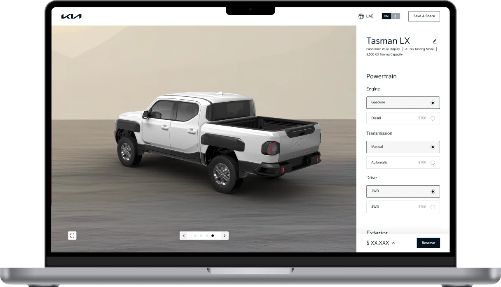
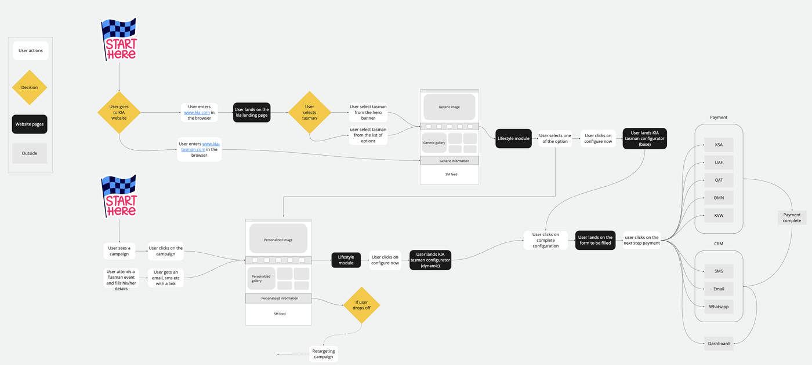
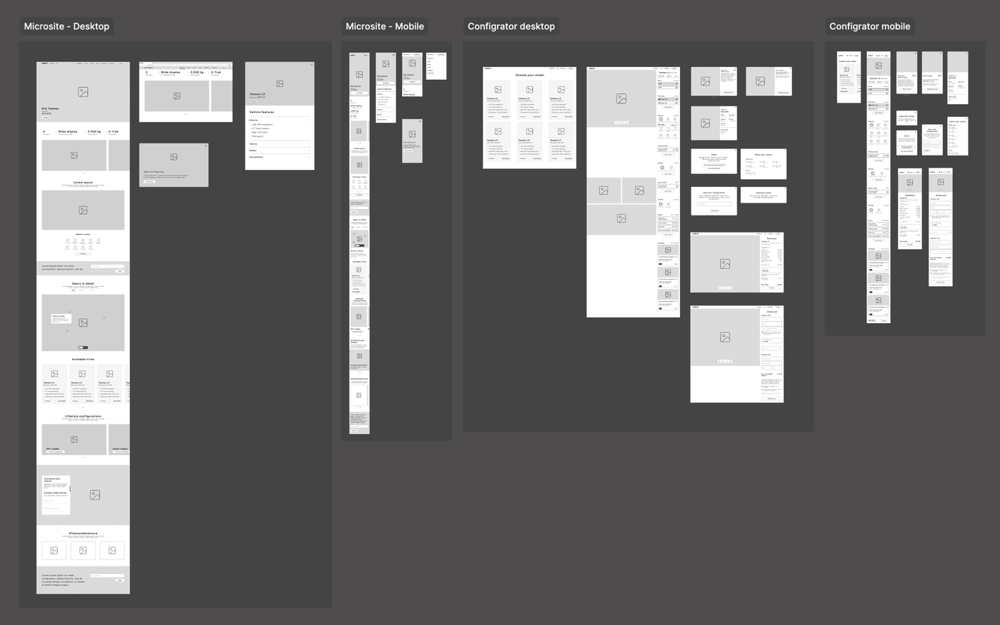
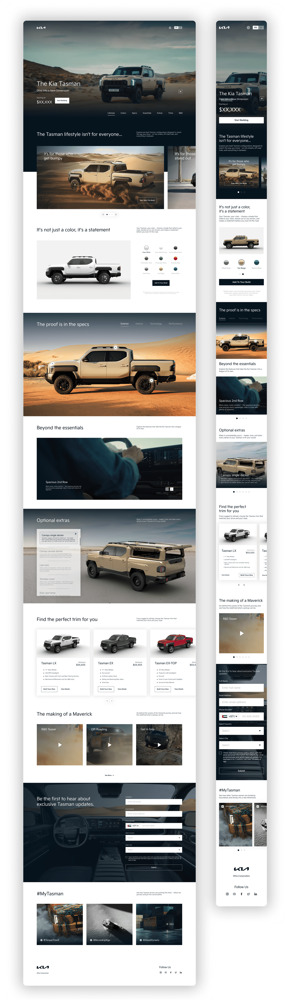
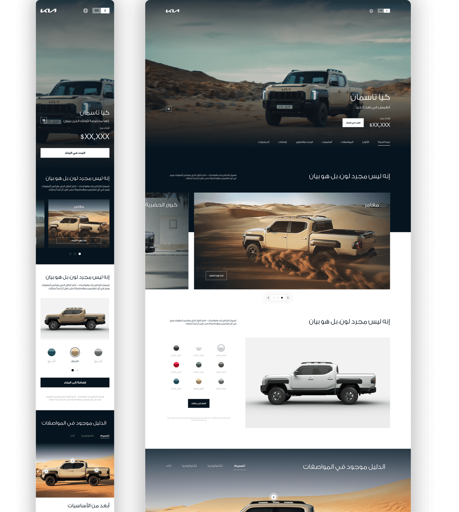

Cadillac
0 to 1: Launching Cadillac's luxury EV lineup
Led the end to end launch experience for Cadillac's first regional EV platform.


Kia Tasman was Kia's first pickup truck launch in the Middle East. The truck had already launched in Korea, but almost nothing from that setup transferred. Korean assets couldn't be licensed to the region, 3D renders had to be created from scratch in parallel, and the microsite and configurator had to feel like one connected journey despite being built as two separate surfaces.
The harder problem was that Middle East truck buyers aren't Korean truck buyers. Understanding that difference shaped everything that followed.
I led the work end to end, from research and structure through experience direction across both surfaces, delivered in English and Arabic with full RTL support.
A look at the final design before we get into how it came together.
Three things made this launch genuinely difficult. First, a new category with no regional reference: nobody in the Middle East had considered a Kia pickup truck before, and the experience had to make them consider it, understand it, and want to configure one in a single visit.
Second, no assets to work with. Kia Korea wouldn't license their 3D renders to the Middle East market, and the configurator couldn't exist without them, so a third party agency was commissioned to create new renders in parallel with our design work, meaning we were designing a configurator without the core visual asset it depended on.
Third, two separate surfaces that needed to feel like one: the microsite and configurator were built independently but had to feel like a single connected journey. And regional rules changed what could even be shown, feature availability differed by market, and in some markets purchase eligibility was restricted to citizens rather than residents.
MRM had already built configurators for GM, which meant there was existing behavioural data to work from rather than starting cold. I partnered with the data team to study it, then ran a competitive analysis of regional truck configurators to understand what buyers here were already used to.
The Korean launch data was useful, but it described a different buyer. Trucks in this region carry meanings they don't carry in Korea, used for dune bashing, functioning as a status symbol as much as a utility vehicle. A configurator built around Korean purchase logic would have been answering questions nobody here was asking. So I went to actual truck owners, running sessions with truck users across the region to hear what they look for when buying. Tasman also arrived with significantly more technology than the category expected, including a large panoramic screen, which reframed the problem: this wasn't only about proving a Kia truck belonged here, it was about positioning a truck that didn't behave like the trucks people already owned.
The overall flow didn't need a formal architecture exercise, that was clear from the start. What needed working out was everything underneath it, making someone believe this is the truck they want before they ever reach a configuration screen. Wireframes were mapped through this phase, iterated, and tested with stakeholders. Only once everyone was aligned on structure did visual design begin.


Waiting for 3D renders would have stalled everything. I suggested moving forward with placeholder assets and a disclaimer on every frame that renders were not final. This kept approvals moving and separated the asset problem from the design problem. Kia sent a representative from Korea to work alongside us throughout.
Configurator assets aren't simple renders. Each customizable element needs its own layer, color, wheels, trim parts, tow hooks, so the configurator can swap them without reloading entirely. I briefed the 3D agency on this structure early so assets were built to work technically, not just look right.
When renders came in with errors caught by the Kia product team, swapping assets was straightforward. Change a few key components and the library updated everything else. Without components, each correction would have taken days.
Most configurators use grey or nothing. Research had already established that these trucks live in a specific environment and carry specific associations here, so I pushed for a subtle regional background that placed Tasman in the Middle East. Internal team members disagreed. Kia loved it.
Consistent terminology, visual patterns, and interaction principles across both surfaces so users never felt the seam between them. Trim first, exterior second, interior third, accessories last. Biggest decisions when attention is highest.




Every surface delivered in English and Arabic. Layouts and hierarchies rethought for right to left readers, not just mirrored.
Once the prototype was ready, it was tested with real truck users from the region alongside stakeholders. The same audience that had shaped the research was the audience that pressure tested the result. Sessions focused on whether the journey did its job, whether the microsite actually built enough conviction to carry someone into the configurator, and whether configuration itself held up for buyers who knew exactly what they wanted from a truck. Findings fed back into the designs before launch.
The launch delivered Kia's first regional pickup truck experience built entirely for the Middle East market. A component library meant 3D asset corrections from the parallel render agency could be swapped across the entire configurator in minutes rather than days. Two separate surfaces were designed with shared language, patterns, and flow so users moved from discovery to configuration without feeling the seam between them.
Separating design decisions from asset availability keeps projects moving when dependencies are outside your control.
Briefing the 3D agency on jellybean structure early meant we never had to redesign the configurator architecture later.
The regional background reminded me that the most impactful suggestions are sometimes the ones that go against the obvious default.
Led the end to end launch experience for Cadillac's first regional EV platform.